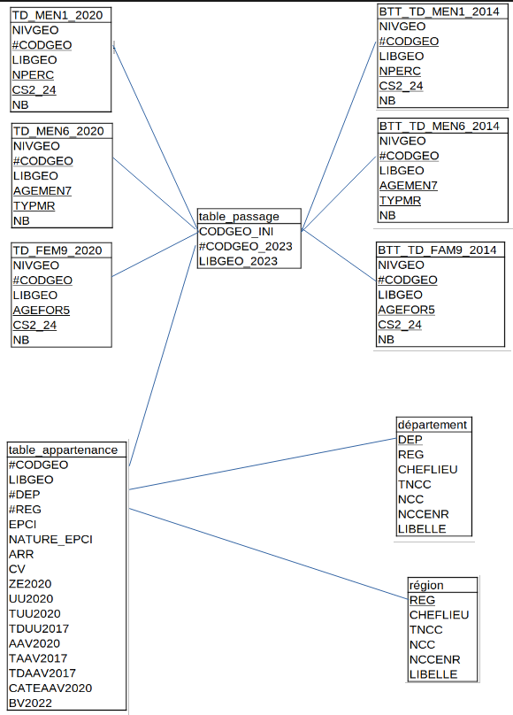

Étudier les liens entre famille et société
Le projet avait pour but d’analyser plusieurs jeux de données de l’INSEE portant sur les couples, les familles et les ménages.
La problématique centrale était de savoir si les facteurs intrafamiliaux comme la taille du ménage, l’âge ou le type de famille entretiennent une relation avec des facteurs extra-familiaux comme la catégorie socioprofessionnelle ou la région.
Cadre de l’étude
Les données ont été importées dans une base relationnelle, puis exploitées avec R afin de produire des cartes, graphiques comparatifs et analyses descriptives.
Données utilisées
Le projet repose sur plusieurs fichiers INSEE issus de la catégorie « Couples-Familles-Ménages ». Les données ont été utilisées pour comparer les situations entre 2014 et 2020.
MEN1
Ménages par taille du ménage et catégorie socioprofessionnelle de la personne de référence.
MEN6
Population des ménages par type de ménage et âge de la personne de référence.
FAM9
Enfants des familles selon l’âge et la catégorie socioprofessionnelle de la personne de référence.

Méthodologie
Sélection des données
Choix de trois bases INSEE liées aux ménages, familles et couples, pour les années 2014 et 2020.
Modélisation relationnelle
Création d’un schéma relationnel avec clés primaires et étrangères, puis importation des fichiers dans PostgreSQL via phpPgAdmin.
Traitement avec R
Agrégation des données, calcul de proportions, comparaison entre années et création de graphiques explicatifs.
Valorisation visuelle
Réalisation de cartes, barplots, graphiques en secteurs et tableaux pour rendre les résultats plus lisibles.
Résultats principaux
L’analyse montre que la localisation géographique, la catégorie socioprofessionnelle, l’âge et la taille du ménage sont liés à la structure familiale.
Constat principal
Les facteurs sont liésLa structure familiale n’est pas indépendante du contexte social : région, métier, âge et taille du ménage influencent les situations observées.
Graphiques interactifs
Les graphiques ci-dessous utilisent le fichier data/insee_valoriser.json. Si le fichier n’est pas trouvé, la page utilise des données de secours.
Visualisations synthétiques
Axes d’analyse
Localisation géographique
Les agriculteurs sont davantage présents dans l’ouest et certaines régions rurales, tandis que les cadres sont concentrés dans les grandes zones urbaines.
Taille des ménages
Les ménages d’une personne sont fortement représentés chez certains retraités et personnes inactives, tandis que les familles nombreuses apparaissent davantage chez les ouvriers qualifiés.
Types de ménages
L’âge et le genre influencent les formes de ménages, notamment dans les familles monoparentales et les couples avec ou sans actif ayant un emploi.
Difficultés rencontrées
Compréhension des variables
Les bases INSEE utilisent de nombreux codes comme CS2_24, NPERC, TYPMR ou AGEMEN7. Il a donc fallu construire une légende claire pour interpréter correctement les résultats.
Importation SQL
Les fichiers ont dû être importés proprement dans PostgreSQL en respectant les séparateurs, les encodages et la structure relationnelle.
Comparaison 2014 / 2020
Les données de deux années différentes devaient être harmonisées pour permettre des comparaisons fiables.
Lisibilité des graphiques
Certaines visualisations contenaient beaucoup de catégories. Il fallait donc choisir des graphiques adaptés pour rendre l’analyse compréhensible.
Outils utilisés
Compétences développées
Bilan du projet
Ce projet a permis de montrer qu’il existe une relation entre les facteurs intrafamiliaux et extra-familiaux. La région, la catégorie socioprofessionnelle, l’âge et la taille du ménage influencent les structures familiales observées.
L’analyse met aussi en évidence une certaine stabilité entre 2014 et 2020, malgré quelques évolutions dans certaines catégories socioprofessionnelles.
Ce travail m’a permis de développer mes compétences en analyse de données, en traitement SQL, en visualisation et en interprétation de données sociales réelles.